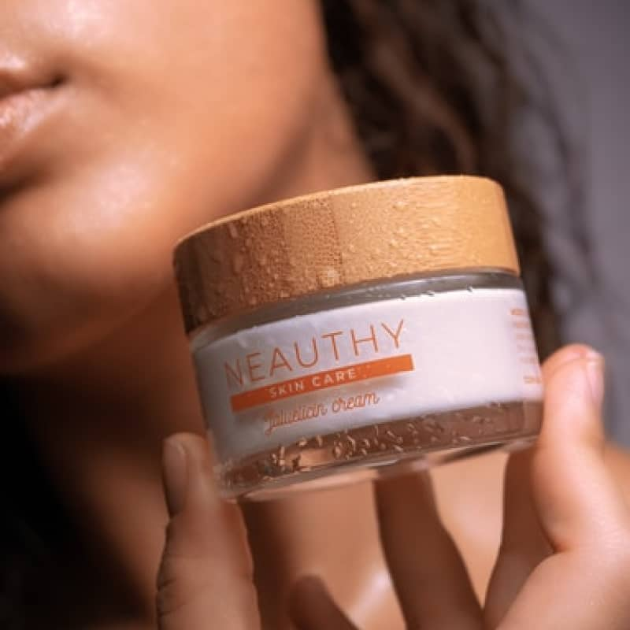
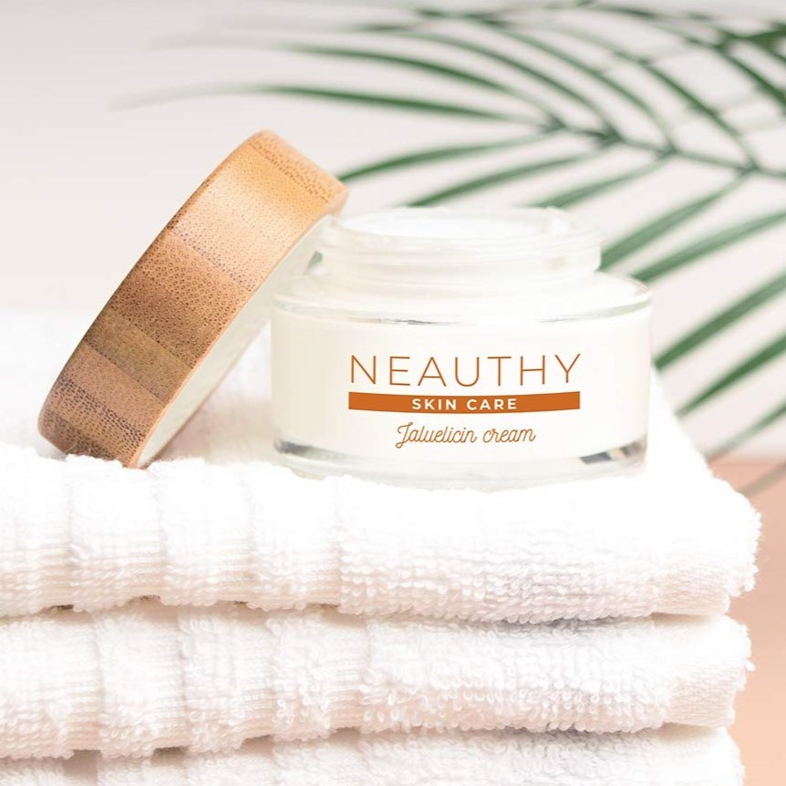
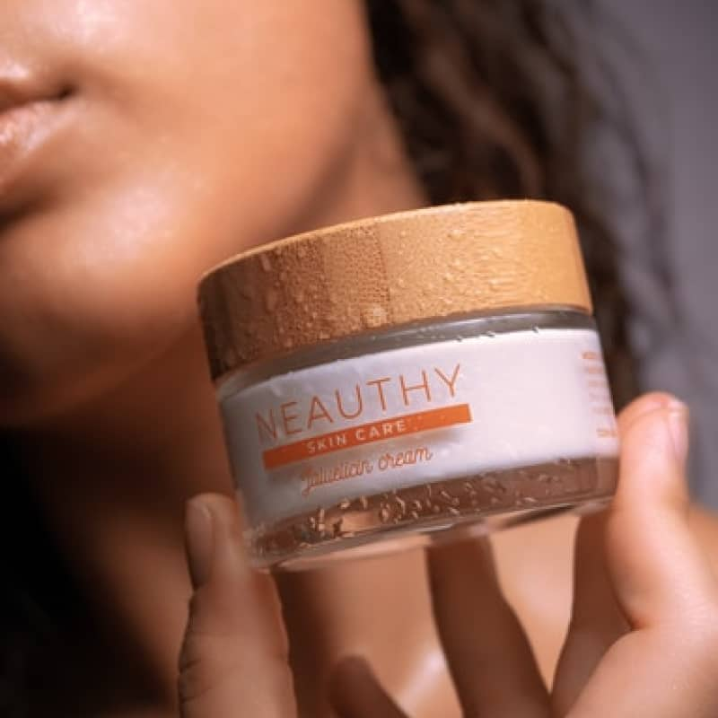
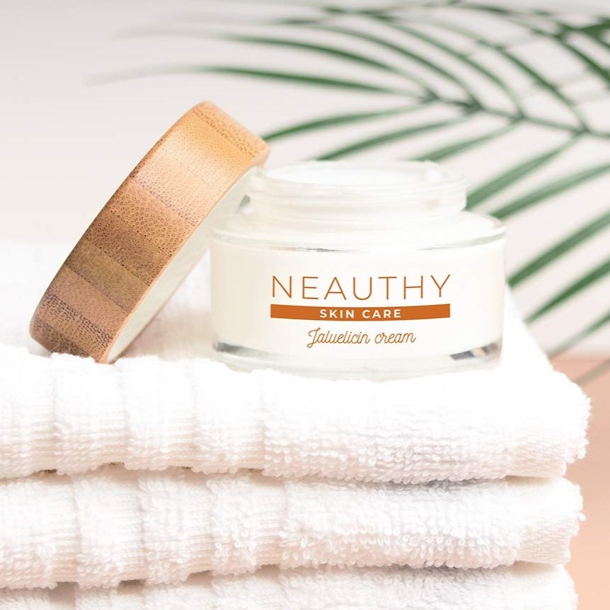

High-Spreadability Fluid
45 ml
89,90 SEK
FREE DELIVERY for orders over 250 kr
Product description
With a crisp and enjoyable touch, the texture is light and transient. A simple mixture of two primary components, pure eliac acid and hyaluronic acid, which have long been recognized for their therapeutic benefits. EVERY SKIN TYPE IS SUITABLE FOR THIS LINE (dry, mixed, and oily).
The nutritional, restorative, and antioxidant qualities of snail slime. Additionally, it contains film-forming ingredients like proteins, mucopolysaccharides, allantoin, and glycolic acid, which leave skin feeling hydrated, silky, and soft. It also inhibits the development of scars, stretch marks, dark spots, and pimples, as well as the buildup of impurities.
Vegan
Lifting and Firming
Organic
Reviews
A PLUS for sensitive skin (older women especially)
Excellent moisturizer for sensitive skin
This has become my new daily moisturizer. My skin is pretty sensitive and prone to break outs and irritation. Due to this reason I cannot really use any fragrance in my skincare/makeup routines. I was already using the snail mucin power essence when I decided to add this into my routine.The texture is unlike any moisturizer I have ever used before. Instead of feeling velvety it has almost a sticky/slimey consistency. I know that may be off putting to some but you definitely get used to it. A little goes a long way and it leave my skin feeling soft and smooth with no hint of irritation.I have found this moisturizer to be very hydrating while still feeling more like a water cream or gel moisturizer so I imagine it will also work really well for people who are on the oily side too.I am really enjoying the cos rx line and am looking forward to adding more of their products into my regimen.
- 1
- 2
- 3
- 4
- 5
I am pleasantly surprised by this product. I am 50 yrs young, going through menopause and my facial tone has seen better days.Ok so We all know that stress. My face looked shiny, kinda rejuvenated. It's not oily, it's really slick. It's very viscous, slimy consistency. There is no smell, it's not grainy, it is whitish in colour goes on clear rubs right in it takes a minute for it to dry on your face so it's kind of I wanna say tacky, but after it dries on your face, it feels really smooth and it's almost kinda like it tightens your face when it dries, so that was kind of a nice effect. That was a good indication that it was kind of smoothing out the appearance of the large pores that I have.Overall, I would suggest buying this despite the weirdness of it. It's good I have extremely sensitive skin. I have T zone area so I'm part dry part oily.Exceeded my expectations overall. I'm very happy with my purchase and I will leave reviews for the other products that I bought from this brand on the other pages.